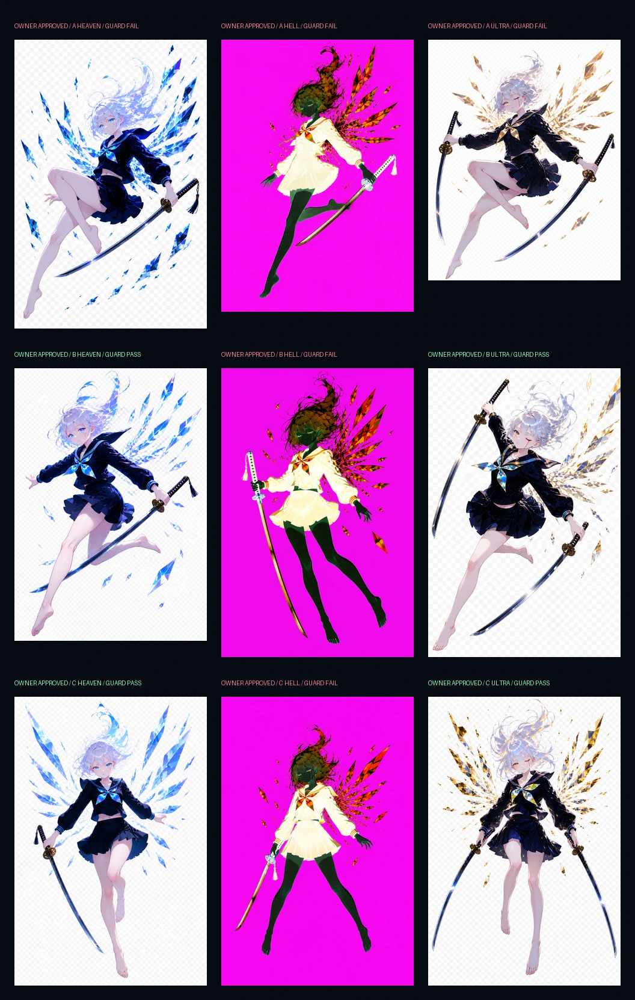

18 total `gpt-image-2` calls · 9 guard-triggered replacements · 9 active candidates · 9 superseded Hell references preserved. No unbriefed call was made.
Each active Hell is an exact full RGB inversion of a separately generated Heaven-palette source with natural closed lids and one continuous complementary-cyan tear from eyelid through the full cheek. There is no post-inversion edit or recolor.
Read each card and the independent report. A visual pass never overrides an alpha, anatomy, modesty, state, weapon, or continuous-tear failure.
All sets A, B, and C are approved for downstream use. This override authorizes production without rewriting failed alpha, edge, framing, or tear checks as passes.
All nine active previews

Set comparison
Independent reviewer
Hard boundary
V3 remains rejected reference. These candidate WebPs are owner-approved visual sources, not guard-certified alpha masters. Downstream receipts must cite the owner override, preserve provenance, and report every deterministic matte/composite transform honestly.